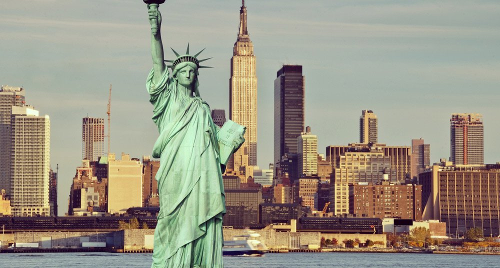
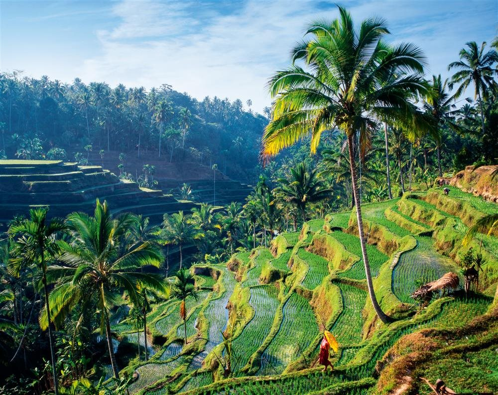
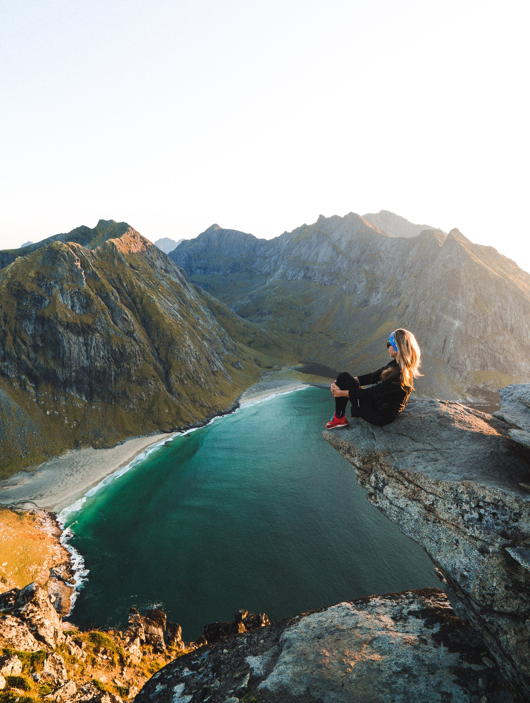
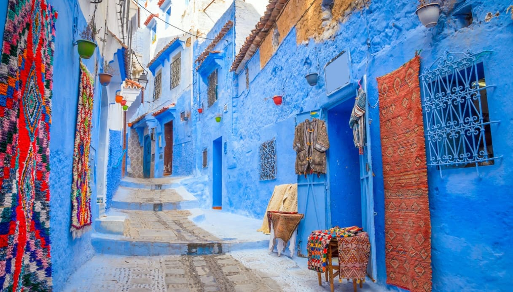
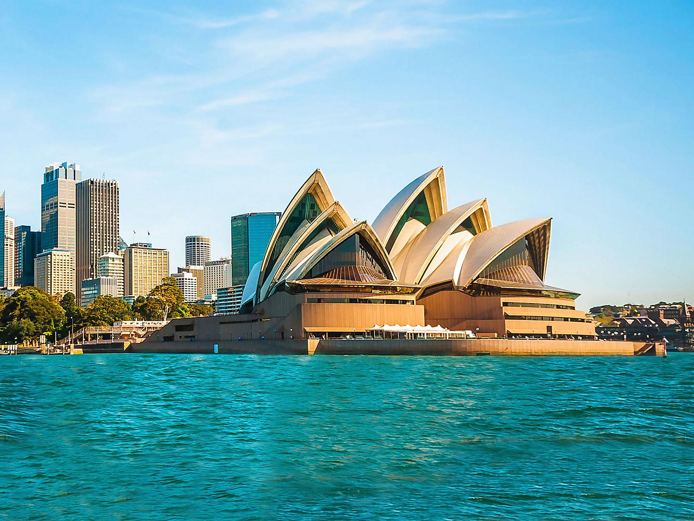
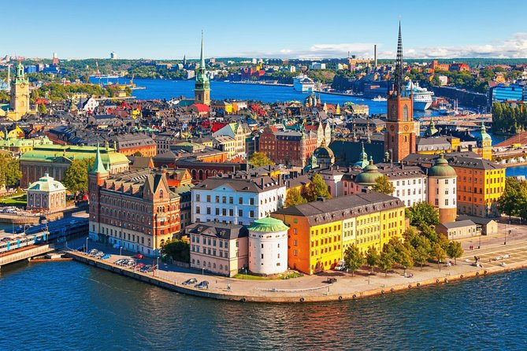

Log in
Sign up
Account information
Personal information
Brazil
We visited Brazil in 2005 for family vacation, 2008 on a
childrens international summer camp and in 2017 for vacation.
Brazil, officially the Federative Republic of Brazil, is the
largest country in both South America and Latin America. At
8.5 million square kilometres (3,300,000 sq mi) and with over
211 million people, Brazil is the world's fifth-largest
country by area and the sixth most populous. Its capital is
Brasília, and its most populous city is São Paulo.
(Source:
wikipedia.com)
The largest country in South America, Brazil occupies almost
half the continent. Nearly all of it is in the Southern
Hemisphere, and much of it is tropical, with vast stretches of
rainforest filled with exotic plants and wildlife. Brazil's
7,400-kilometer Atlantic coast is lined with golden-sand
beaches, and its interior is filled with mineral resources.
Gold from Brazil's mines still lines the churches of Portugal,
the colonial power that ruled Brazil until 1822. This strong
Portuguese influence is evident in Brazil's colonial
architecture, in decorative arts such as the glazed tiles in
its churches and convents, and in the language. For tourists,
Brazil is both a tropical paradise and an exciting cultural
destination with attractions for all tastes, from idyllic
beach holidays and jungle explorations to world-class art
museums and the pulsing rhythms of Rio's Carnival.
(Source: planetware.com)
Pictures and videos of Brazil
Rio de Janerio, that we visited in 2017, is the most famous city of Brazil with it's colorful and loud culture of football and carnevals. Here we also find the famous Jesus statue facing the city.
Brazil is famous for it's spectacular carnevals and samba clubs and we visited both carnevals and samba clubs in Brazil.
The city Natal is placed by the north east coast of Brazil. Here we went with beach buggies on the sand dunes and took long walks along the sand beaches.
The favelas of Brazil is known as the ghetto neighbourhoods of Brazil. Going through the country we saw big neighbourhoods of this kind, with plenty of childrens kites flying up in the sky.
The outstanding rainforests of Amazonas is a very important and beautiful part of Brazil full of wildlife, which was visited by us in 2005.
USA
We have visited the USA a couple of times. The first time, in 2008, we went to Chicago, and some years later we visited the middle of USA, California and New York. The United States of America (USA), commonly known as the United States (US) or America, is a country primarily located in North America. It consists of 50 states, a federal district, five major unincorporated territories, 326 Indian reservations, and some minor possessions. At 3.8 million square miles (9.8 million square kilometers), it is the world's third- or fourth-largest country by total area. The United States shares significant land borders with Canada to the north and Mexico to the south, as well as limited maritime borders with the Bahamas, Cuba, and Russia. With a population of more than 331 million people, it is the third most populous country in the world. The national capital is Washington, D.C., and the most populous city is New York City.
(Source: wikipedia.com)
The US is home to some of the most spectacular scenery in the world and some of the most recognizable icons on the planet. Many of the top attractions in the United States are bucket list destinations, drawing visitors from around the world. Given the size of the United States, most people plan their trips to a specific region, be it the East Coast, the Southwest, the beaches of Florida or California, or outlying regions like Hawaii and Alaska. You may want to see the city sights, or head out to the parks and natural areas. In some cases, you can easily combine the two if you plan a day trip or two.
(Source: planetware.com)
Pictures and videos of USA
New York is the city of all cities. We visited it in 2017 and experienced the vibrant city life with shopping and amazing broadway shows.
We went to Chicago in 2008 and visited museums, went to Navy Pier and saw the big bean. A fantastic city to travel to!
In 2012 we went to Colorado to explore the nature. We went up the mountain Pikes Peak and went white water rafting.
Mount Rushmore, South Dakota, is a mountain monument of some of USAs greatest preidents. Well worth a visit!
In San Fransisco, California, we visited the Golden Gate Bridge, ate alot of ice cream and had picknick in Alamo Square Park.
Sweden

Northern Sweden
The northern part of Sweden offers a wide range of things to do, regardless of season. During early summer, you can enjoy the unique Midnight Sun. In winter, the spectacular Northern Lights, known as the greatest light show on earth, can be seen in Swedish Lapland. Northern Sweden is also home to the Sami, one of the world’s indigenous people.
Middle Sweden
Central Sweden offers a wide variety of places to visit – from the capital of Stockholm in the east to the vast forests in the west. Stockholm offers a mix of urban adventures and centuries-old history, with the archipelago just a boat ride away. Dalarna is the place to go for a traditional Midsummer celebration, whereas Värmland allows you to encounter the wildlife in its natural habitat.
Southern Sweden
The southern part of Sweden is a holiday favourite for Swedes. The islands of Öland and Gotland are sprinkled with historical sites, unique nature and local flavours. In Skåne, you’ll find yellow canola fields and the locally grown produce that the region is renowned for the forward-thinking city of Malmö features some of Sweden’s most progressive cuisine. On the west coast, the city of Gothenburg and the surrounding archipelago, offer seafood, outdoor adventures and stunning views.
Source: visitsweden.com
Pictures and videos of Sweden
Stockholm is the capital of Sweden which consists of several islands and beautiful architecture from the past centuries.
In Norrland, the north of Sweden, the nature is wild, the montains are high and the northern light shines bright.
Skåne county, in the south of Sweden is the connecting point to Europe. Here we traveled trough beautiful landscape and to the big city Malmö.
Along the east coast of Sweden we find an idyllic archipelago with thousands of islands to travel to by boat.
The west coast is the place to go if you want to experience white sand beaches, eat amazing seafood and see the sunset in the horison where the ocean meets the sky.
Click on USA, Brazil or Sweden to read more about these exciting travel destinations.
Travel experiences
Nothing found! Reset and search for something else.
Bali, Indonesia
A magical blend of culture, people, nature, culinary delights, nightlife, and beautiful accommodation. Bali is rated as one of the best travel destinations in the world
Cape Town, South Africa

Cape Town, is a stunningly beautiful city of Africa, crowned by the magnificent Table Mountain National Park.
Rio de Janeiro, Brazil
In Rio de Janeiro every day is a party, with white-sand beaches, bass-forward nightlife, and five heady days of Carnival bacchanal celebrations in February or March.
Lofoten, Norway
The Lofoten Islands in Norway are undeniably beautiful, with the fjords, montains and the northen lights.
Marrocco
We ate loads of couscous, drank mint tea, hiked, and absorbed the sights and sounds of Morocco.
India

Travelling in India allowed us to meet people from all the world’s great faiths, encounter temple rituals, and see ancient buildings erected centuries before the Taj Mahal.
Sydney, Australia
We've learned that this is a city that's constantly evolving, with new rooftop bars, theatre shows and designer shops popping up at every turn.
Santorini, Greece

The five villages of Fira, Oia, Imerovigli, Firostefani, and Akrotiri sit atop the caldera and offer spectacular views into the crater created from a 16th-century BC volcanic eruption.
Stockholm, Sweden
No matter how often we come to Stockholm, we're always amazed by it. Everything is photogenic and picturesque – the parks, the islands and the historical houses dating back hundreds of years.
Bali, Indonesia
A magical blend of culture, people, nature, culinary delights, nightlife, and beautiful accommodation. Bali is rated as one of the best travel destinations in the world
Cape Town, South Africa
Cape Town, is a stunningly beautiful city of Africa, crowned by the magnificent Table Mountain National Park.
Rio de Janeiro, Brazil
In Rio de Janeiro every day is a party, with white-sand beaches, bass-forward nightlife, and five heady days of Carnival bacchanal celebrations in February or March.
Lofoten, Norway
The Lofoten Islands in Norway are undeniably beautiful, with the fjords, montains and the northen lights.
Marrocco
We ate loads of couscous, drank mint tea, hiked, and absorbed the sights and sounds of Morocco.
India
Travelling in India allowed us to meet people from all the world’s great faiths, encounter temple rituals, and see ancient buildings erected centuries before the Taj Mahal.
Sydney, Australia
We've learned that this is a city that's constantly evolving, with new rooftop bars, theatre shows and designer shops popping up at every turn.
Santorini, Greece
The five villages of Fira, Oia, Imerovigli, Firostefani, and Akrotiri sit atop the caldera and offer spectacular views into the crater created from a 16th-century BC volcanic eruption.
Stockholm, Sweden
No matter how often we come to Stockholm, we're always amazed by it. Everything is photogenic and picturesque – the parks, the islands and the historical houses dating back hundreds of years.